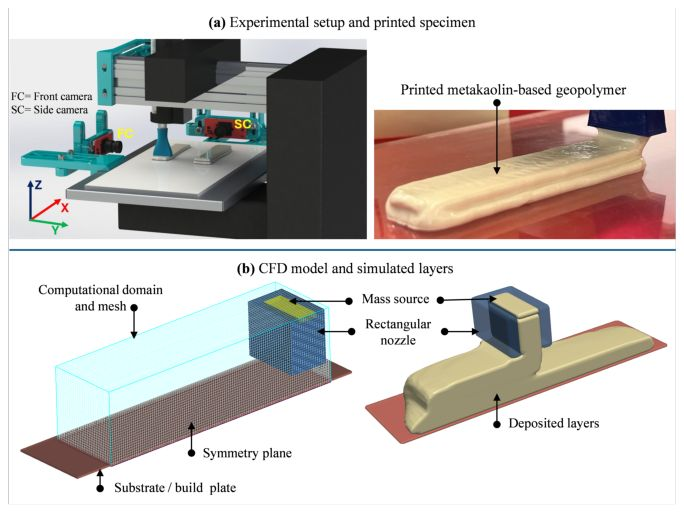

Computational Fluid Dynamics Modeling and Experimental Analysis of Rapid Curing in 3D Printing for Structural Applications
M.T. Mollah, J. Wonterghem, H. Rasmussen, D. Meng, B. Šeta, S. Rahemipoor, D. Meile, N. Ranjbar, J. Spangenberg
Solid Freeform Fabrication 2025: Proceedings of the 36th Annual International Solid Freeform Fabrication Symposium, pp. 840–851, 2025
Abstract
Integrating rapid-curing mechanisms into the 3D printing of structures offers significant potential to accelerate printing speeds and enhance the mechanical performance. Precise control over curing kinetics is essential to better utilize material flowability during extrusion and ensure adequate solidification after deposition, thereby minimizing deformation and improving layer stability. This study investigates the impact of material curing on the stability and deformation of printed layers using both experiments and computational fluid dynamics (CFD) simulations. A generalized Newtonian model is developed to simulate the rapid buildup of yield stress during the printing process. Simulation results demonstrate good agreement with the experiments, validating the CFD models. Furthermore, the model explains how to control the deformation of the deposited layers as curing progresses over time, providing a new tool to estimate the adequate curing kinetics of the material before printing the next layer on top.
Figures from this paper
{kind=link}

Citation
@inproceedings{15_2025_mollah_et_al_cfd_modeling_and_experim,
title = {Computational Fluid Dynamics Modeling and Experimental Analysis of Rapid Curing in 3D Printing for Structural Applications},
author = {M.T. Mollah and J. Wonterghem and H. Rasmussen and D. Meng and B. Šeta and S. Rahemipoor and D. Meile and N. Ranjbar and J. Spangenberg},
booktitle = {Solid Freeform Fabrication 2025: Proceedings of the 36th Annual International Solid Freeform Fabrication Symposium, pp. 840–851},
year = {2025}
}